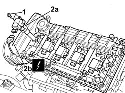

5510C10 IGNITION COIL/REEL - R&R
- Path
- Procedures > 55 ELECTRICAL EQUIPMENT > 5510 ENGINE IGNITION > 5510C COIL, CONTROL UNIT, SENSORS > 5510C10 IGNITION COIL/REEL - R&R
- Kind
- repair procedure (removal / refitting; the operation number is the code)
- Applies to
- engines: 2.0 TB, 2.4 20V; all production periods
- Interactive page
- https://sloeber94.github.io/elrnDB-lThss/en/#/79388
Applies to: engines: 2.0 TB, 2.4 20V; all production periods
 Removing
Removing
 Refitting
Refitting- Disconnect the negative battery terminal.
See in Op. 7040D50 ENGINE COMPARTMENT UPPER SOUND INSULATION SHIELD - R.R.
See in Op. 1016A40 Ignition COIL COVER on cylinder head - R.R.
1. Undo the retaining bolt.
2. Remove the coil (2a) from the housing and disconnect the electrical connector (2b).
 | Description | Connector |
|---|---|---|
2b | Ignition coil | A030A |
| Description | Connector |
|---|---|---|
Ignition coil | A030B |
| Description | Connector |
|---|---|---|
Ignition coil | A030C |
| Description | Connector |
|---|---|---|
Ignition coil | A030D |
| Description | Connector |
|---|---|---|
Ignition coil | A030E |

Applies to: engines: 2.0 TB, 2.4 20V; all production periods
Refitting
Removing- Connect the electrical connector for the coil.
| Description | Connector |
|---|---|---|
. | Ignition coil | A030A |
| Description | Connector |
|---|---|---|
. | Ignition coil | A030B |
| Description | Connector |
|---|---|---|
. | Ignition coil | A030C |
| Description | Connector |
|---|---|---|
. | Ignition coil | A030D |
| Description | Connector |
|---|---|---|
. | Ignition coil | A030E |
- Fit the coil in the housing and tighten the fixing bolt.
See in Op. 1016A40 Ignition COIL COVER on cylinder head - R.R.
See in Op. 7040D50 ENGINE COMPARTMENT UPPER SOUND INSULATION SHIELD - R.R.
- Connect the negative battery terminal.
Topics linked from this page (2)
- 1016A40 Ignition COIL COVER on cylinder head - R.R.
- 7040D50 ENGINE COMPARTMENT UPPER SOUND INSULATION SHIELD - R.R.